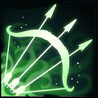

Voltar

Tyr, O Mais Forte
Work in progress...
Identidade
Nome: Tyr Vidar
Idade: 21 Anos
Altura: 2.15 m
Gênero: Masculino
Classe: Viking
Raça: Aesiris
Pontos de personagem
Vida: - HP
Level: 2
Experiência: 50 / 250
Sanidade: 100%
Personalidade
Caótico-Mau
Motivaçoes: Lutar e beber Hidromel
Inspiraçoes: Ele mesmo, Cerveja e Hidromel.
Defeitos: Imprevisível e esquentado.
Objetivo: Achar alguém mais forte que ele e achar seu pai.
Exemplos:
Modificador: [-X], [+X]
Bônus Raça: (X)
• FORÇA: 18 {+2}
• CONSTITUIÇÃO: 15 {+1}
• DESTREZA: 6
• INTELIGÊNCIA: 8
• SABEDORIA: 5
• CARISMA: 1
• Chamado do Valhalla
{Passiva} (Raça)

Uma vez por dia ao chegar em 1 de vida ou tomar um golpe fatal, Tyr não morre, rola Constituição para recuperar vida e ganha Buff de 2 de Força e 2 de Destreza, gasta todos os pontos de energia e desmaia. Nos próximos turnos, rola Constituição para acordar e cada rodada fica mais fácil. Caso Tyr mate o alvo antes do primeiro desmaio ele não desmaia e assusta todos os inimigos próximos.
• Fúria Viking
{Passiva}

A cada 10 pontos de vida perdido, recebe +1 de Força e Destreza.
• Foco Absoluto
2 Cargas p/ batalha
Tyr foca em seu interior e ganha Destreza.
Medita durante 1 turno.
• Em processo de criação.
----

----
----
• Em processo de criação.
----

----.

Historia
Localizado no norte, Dedos de Tundra é um ambiente congelante, primal e conhecido por seus renomados guerreiros.
Em uma pequena aldeia nasce Tyr Vidar, um Aesiris que desde sua infância demonstra interesse por guerra e batalhas.
Tyr, desde seu nascimento possuí uma runa no bíceps esquerdo e por conta disso alguns boatos corriam na boca do povo sobre o garoto.
Aos 12 anos, Tyr passava seus dias inteiros fora de casa, brigando na rua, treinando combate corpo a corpo e armado, lutando com seus amigos e fazendo tudo que se possa imaginar, menos brincando. Numa noite escura voltando pra casa a atenção de Tyr é desviada por um feixo de luz que brilha no meio da nevasca: uma faca de caça quebrada e enferrujada, apenas sua ponta refletia a enorme lua cheia que havia no céu. Tyr pega a faca e esconde em seu casaco de pele, a mãe dele jamais toleraria uma arma dentro de casa. Astrid repudiava a atitude de Tyr em treinar lutas e brigas, ela dizia que Tyr nasceu para ser gentil e não para trazer a guerra.
Todos se reuniram no salão comunitário para comer o banquete que foi preparado para comemorar a grande temporada de vendas, pesca e batalhas que acabara de passar. Gorm sentado no meio da mesa em seu trono, Astrid ao seu lado e Tyr na ponta da mesa, perto dos demais moradores. Gorm vinha bebendo muito nesse dia por ser uma grande comemoração e acabou se recolhendo para os aposentos mais cedo acompanhado de Astrid. Tyr no meio de seus amigos mostrava orgulhosamente sua faca enferrujada e dizia a todos que ele era um guerreiro agora que possuia uma arma.
Gorm, fedendo a cerveja e hidromel começou a gritar com Astrid e se preparar para dar mais uma surra em sua esposa. O ambiente era selvagem. Sangue pela parede, suor no chão, hematomas e cortes em Astrid. Gorm bebâdo não diferenciava mais sua esposa de um guerreiro inimigo. Sacou seu machado e partiu para acabar com sua vida, quando foi interrompido pela porta abrindo. Tyr também voltou mais cedo após ser expulso por beber uma caneca de cerveja. Gorm ri e diz que vai matar dois coelhos com uma cajadada só. Apesar de bebâdo o álcool parecia apenas lhe dar mais força. Tyr vai para cima e é acertado pelo antebraço de Gorm, fazendo com que ele fosse parar na parede.
Tyr está incrédulo. Ele estava acostumado a dar uma surra em pessoas de 17, 25 e 30 anos mesmo com sua pouca idade, pois ele era o mais forte. E ser lançado na parede com apenas um golpe era algo que ele nunca tinha experienciado. Tyr se recompoe e os dois agora trocam socos e chutes, Gorm consegue esfaquear Tyr 2 vezes na barriga enquanto sua mãe grita e chora. Apesar da dor, Tyr continua a desferir golpes em Gorm, que agora sente bem mais os golpes entrando.
Quando criança Tyr sempre venceu todas as brigas, pois ele era o mais forte. Aos 12 anos ainda não havia sido derrotado, pois ele era o mais forte. Com sua barriga sangrando e seu oponente marchando em sua direção Tyr se pergunta se ele realmente era o mais forte. Tomado por ódio e fervendo de fúria Tyr contorna Gorm e pula em suas costas. Gorm não perde tempo e começa a balançar sua faca contra o garoto, porém Tyr está sentindo dentro de si uma chama de batalha que cresce cada vez mais. Tyr toma outra facada no braço, uma nas costas e uma no rosto. Após o braço de Gorm cansar, Tyr aproveita a oportunidade e enfia sua faca enferrujada com toda sua força no pescoço de Gorm, que lança o menino e sua faca para o chão. O sangue de Gorm espirra por todo lado, a casa agora é um grande quarto vermelho. Tyr está gravemente ferido e quase desmaiando quando Gorm finalmente cai aos seus pés. Tyr pisa na cabeça de seu oponente morto e com a pouca força que lhe resta, abre um sorriso. Tyr mais uma vez ganha, pois ele É o mais forte.
Aos 13 anos Tyr é coroado o novo rei da aldeia após ter matado Gorm, antigo rei e seu pai. O chefe do exército dá os parabéns a Tyr e também pergunta se ele vai querer coroar uma rainha ou viver sem uma, apenas com uma escrava pessoal igual o rei anterior. O mundo de Tyr desaba com a revelação e corre para sua mãe para tirar o resto de suas dúvidas. Astrid nunca foi rainha, era uma escrava de Gorm que sequer era o pai de Tyr. O garoto agora reflete e percebe o tratamento que ambos recebiam do antigo rei.
Tyr renuncia a coroa e a entrega para sua mãe, tomado pela fúria do abandono, arruma suas coisas e parte mundo a fora a procura de seu pai verdadeiro. Tyr também almeja encontrar alguém que seja mais forte que ele, o mundo parece um lugar sem graça habitado apenas por pessoas e monstros fracos. Ele percorre o norte inteiro procurando um oponente digno e falhando miseravelmente. Agora, com 21 anos, Tyr termina de navegar o violento mar de Qän e chega em Terras de Mitrael. Com grandes cabelos loiros trançados, olhos azuis, alta estatura, músculos e tatuagens tribais, agora já é impossível passar despercebido nos lugares. Todos conhecem Tyr, O Mais Forte.
Dizem que se aprende muito apanhando. Se for verdade… Sou um baita professor.
Ninguém nunca me venceu. Cê sabe, né?